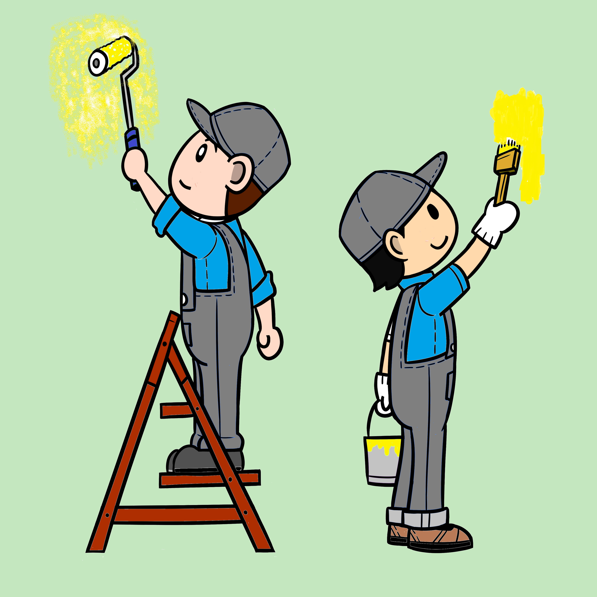

Los dos pintores

Es importante aparte de contratar un buen servicio, la selección de las pinturas, ya que existen diferentes tipos para diferentes superficies, la calidad de las mismas es otro factor, ya que estas afectaran la cantidad requerida para cubrir la superficie, la protección que brindaran y su duración en el tiempo
Otro factor importante antes de realizar un trabajo de pintura es detectar los problemas que existen en la estructura del edificio, ya que algunos se pueden arreglar mediante el mismo trabajo de pintura, pero otros requieren un trabajo previo por ejemplo la humedad por capilaridad.
Debemos elegir el color según nuestros gustos y el efecto que se quiere causar en los residentes, estos ayudaran a crear diferentes ambientes afectando las emociones además de brindar una mayor belleza.
Una vez hecho las reparaciones y sabemos el tipo de pintura requerido debemos saber el efecto que se quiere causar en el ambiente